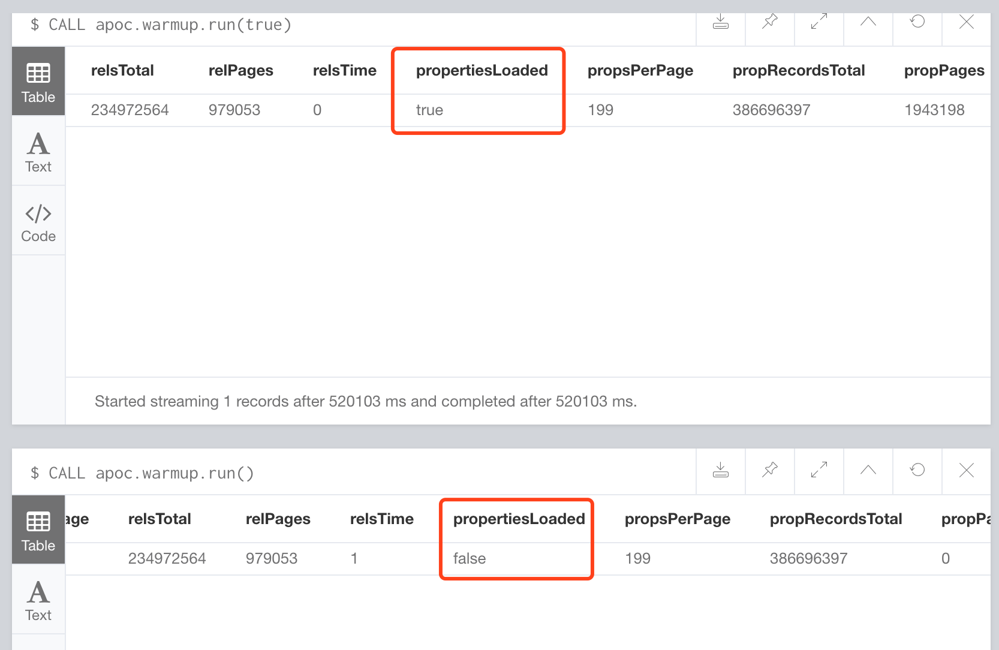

你可能发现有些查询在第二次运行时非常的快，这是因为在冷启动时服务节点中没有任何缓存，需要到硬盘中查找所有的记录。每当部分或全部记录被缓存，你将发现有了很大的性能提升。
一种被广泛使用的技术是「缓存预热」，借助这个技术，我们运行一个查询语句来触发图中所有的点和关系。假设内存可以容纳这些数据，整个图会被缓存起来。否则将会缓存尽可能多的数据。尝试一下它是如何给你带来帮助的吧！
Cypher(Server,Shell)
1 | MATCH (n) |
上边的例子用到了 count(n.prop) + count(r.prop) ，来强制让优化器在点或关系中搜索名为 prop 的属性。用 count(*) 替代它将不够充分，因为这样不会加载所有的点和关系属性。
内嵌方式(Java):
1 | @GET @Path("/warmup") |
在 3.0 之后的版本并且使用了 APOC 插件的话，可以运行如下存储过程来完成缓存预热
CALL apoc.warmup.run()
property record loading for warmup, apoc.warmup.run(true)
CALL apoc.warmup.run() 默认不读取属性记录，更加建议使用 call apoc.warmup.run(true)，这个是 3.2.0 以上版本插件的新功能。

这样做除了纯粹的提升性能外还可以提供更多方面的帮助，如果你使用的是 Neo4j集群的话，还可以帮助缓解由于查询滞后而导致的上游问题。例如，如果节点繁忙并且负载均衡超时时间很短，图中没有任何数据在内存中，很可能会显示该集群最初不可用。如果缓存处于预热状态，那么冷启动应该就不会有短暂超时的问题了。
APOC 安装
- 将最新的插件 jar 包下载后放进 neo4j 的 plugins 目录中
- 修改配置文件加入
dbms.security.procedures.unrestricted=apoc.* - 重启
neo4j